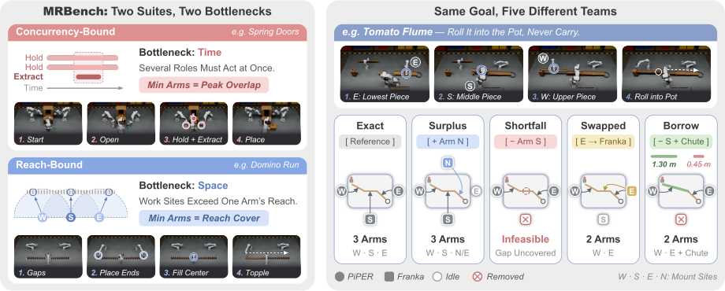
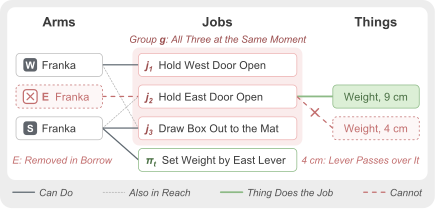
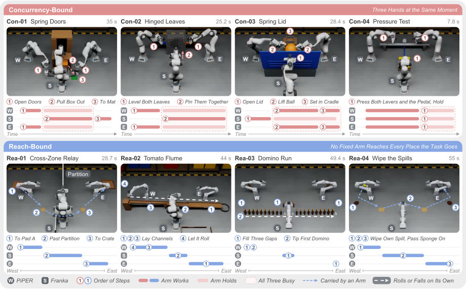
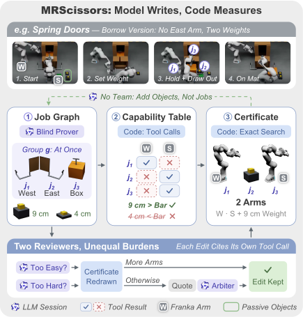

“Plurality is never to be posited without necessity.” · William of Ockham
MRBench
Physical Necessity Reasoning in Heterogeneous Multi-Robot Manipulation
Learn moreMRBench: Benchmarking Physical Necessity Reasoning in Heterogeneous Multi-Robot Manipulation
Which arms, or which passive objects in their place, does a task truly need, when the goal stays fixed and the minimal feasible team changes?

Physical necessity depends on what the task demands and what is on the table. Left: Concurrency tasks need simultaneous actions; Reach tasks need every work site covered. Right: one goal, five different teams.
Physical necessity as a minimal support set
A task is a set of jobs done by doers; it needs several arms when jobs at different places must happen at once (Concurrency) or lie beyond one arm's reach (Reach).
Jobs
Each job has sites, the poses where a hand must act, and a failure signal the simulator reports when it is not done. The jobs of a group must happen at once, such as a door held open while a box is drawn out.
j ∈ J, sites Sj, groups 𝒢 ⊆ 2JDoers
The arms, each a robot model at a fixed place, and the passive objects on the table, which can take over a job from an arm. An arm can do a job when it reaches every site with margin and its fingers open wide enough.
c(a, j) = 1 ⇔ ρa(s) ≥ δj ∀s, wj ≤ oaMinimal support sets
The smallest feasible teams. Any one of them is a right answer; the task is infeasible when there is none.
MSS(A, P) = arg minT ⊆ A feasible |T|
Spring Doors, borrow. With the east arm removed, the 9 cm weight does its job; the 4 cm one lets the lever pass over it.
Task design
Eight tasks in five configurations give 40 versions and 480 scenes. The instruction gives only the goal: no arm, role, step or tool.
Hover a scene to play its reference where a clip exists; click it to open that task below.
Concurrency and Reach
Three hands at once
One more than a two-handed robot has: two bodies held while a third hand works (Con-01, Con-02), one held while two work (Con-03), or three held together (Con-04).
No fixed arm reaches every place
No two arms act at once. Bodies pass between arms by being set down, or each arm works where only it reaches.

Overview of the eight tasks in MRBench. Each at a key moment of its scripted reference (exact, easy level), with its steps in order and when (Concurrency) or where (Reach) each arm works.
Configurations
They change only a task's doers; each but the reference defeats a shortcut that skips measuring.
Versions: every task in every configuration
Video: the scripted reference at seed 0, played at 2×; a configuration without a clip shows a still of its scene. Easy and hard levels differ in one parameter. Arms: filled, in the minimal team; open, on the table but idle; dashed, absent.
Benchmark construction
How a scene is built, and how its right answer is known: the same for every task and configuration.
Workcell and scenes
One table has three fixed places, west and east 1.4 m apart with south between, and a fourth, north, for the surplus arm; each takes a Franka, a PiPER or an SO-101. We simulate in Isaac Sim 4.5 with Isaac Lab 2.1.
Each version has 12 scenes (two levels, six seeds): the seed picks the room, recolors the task's objects and adds three everyday items.
Looks: the card look used for the figures, then the rooms of seeds 0, 1 and 2 (exact, easy level). Cameras: card look, easy level, seed 0; a wrist camera for every arm on the table.
Ground truth is computed
The gold answer of a scene comes from IK with margins and an exact search for the smallest feasible teams, not from a person's judgment.
Every gold answer is then checked in Isaac Sim.
Protocol and metrics
The protocol removes four conveniences that multi-robot benchmarks offer and real workcells do not.
No team is given
A method gets the goal, each arm's model, place and orientation, and the objects, but no role, skill list or reach.
Feasibility is not promised
14 of the 40 versions are infeasible, and “these jobs cannot all have a doer” is then the answer.
Names do not decide
A prop and its distractor look alike, and masses are given only within a factor of 0.75 to 1.3, so fitness must be measured.
Failure is not proof
A failed run's report names the jobs whose signals fired; only such a signal, not a missed grasp, counts against a smaller team.
MRScissors
The model writes what the task needs as a job graph, code measures who can do it into a capability table, and an exact search over that table returns the fewest arms.
Job graph from a blind prover
One session writes the jobs, their sites and groups from the goal and the scene. It is not told which arms exist, so it cannot write the task to suit them.
Measured capability table
Code fills every cell from tool results: who_can for every arm at every site, meet for hand-overs, measure for objects.
Exact search and certificate
From one arm up, it returns every smallest team, with what each arm's removal leaves undone and each object used or rejected.
Stand-in objects
When no team exists, the prover, still blind, is told which jobs lack a doer and asked what on the table could take them over.
Review with unequal burdens
Two reviewers, blind to each other, look for what was written easier or harder than the task; every edit cites its own tool call.

Overview of MRScissors on Spring Doors, borrow: no east arm, two weights.
Main results
Five methods, each given the same information, tools and output form, answer all 480 scenes in one shot with Qwen3.8-Max and with Claude Sonnet 5.5. Feasible answers are then carried out in Isaac Sim by a shared executor.
Team-selection accuracy, one shot
Accuracy (%) of the team named, 96 scenes per configuration and 480 in all. Task: all five configurations of a task-scene right. MSS-SR: right team and a successful run, on the 312 feasible scenes. Click a column to rank by it.
MRScissors names the right team most often on both backbones
The gap is widest at the task level
A task-scene, one task at one level and seed, counts only when all five of its configurations are right. Each square is one of the 96: rows are the eight tasks, columns the two levels and six seeds. Hover a square.
A swapped arm separates the methods most
Each cell is one task in one configuration, 12 scenes; deeper color, more scenes right. The dashed column is swapped, where what a new arm reaches has to be known.
A stronger backbone teaches every method to say no
On shortfall the right answer is infeasible. Both backbones are shown at once.
MRScissors uses fewer tokens than every adapted method
Bubble area: model sessions per episode. Filled: Qwen3.8-Max; open: Claude Sonnet 5.5; a line joins a method's two backbones.
From the right team to task success
Right teams carry different solutions. The executor carries out a method's whole answer, so success scores its solution as well as its team. MRScissors' steps are read off its certificate, where each job's doer is a measured cell.
@inproceedings{mrbench2026,
title = {MRBench: Benchmarking Physical Necessity Reasoning in
Heterogeneous Multi-Robot Manipulation},
author = {Anonymous},
year = {2026}
}